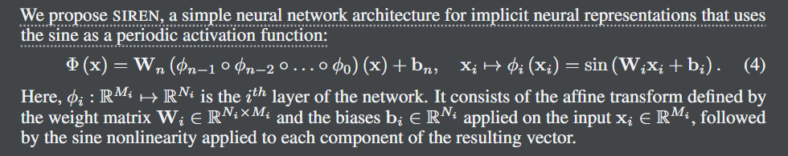
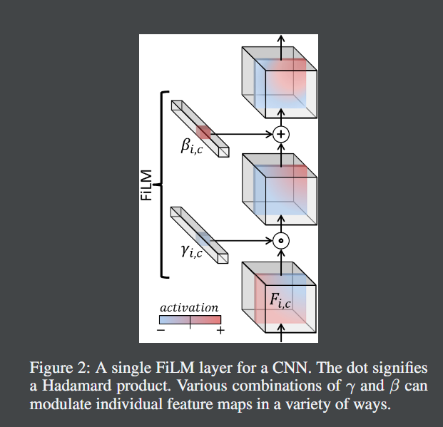

在三平面公式中，我们沿着三个轴对齐的正交特征平面对齐我们的显式特征，每个平面分辨率为 N × N × C（图 2c），N 是空间分辨率，C 是通道数。我们通过将任何 3D 位置 x ∈ R3 投影到三个特征平面中的每一个上，通过双线性插值检索相应的特征向量 (Fxy , Fxz , Fyz )，并通过求和聚合三个特征向量。一个额外的轻量级解码器网络，实现为一个小的 MLP，将聚合的 3D 特征 F 解释为颜色和密度。这些量使用(神经)体绘制渲染成RGB图像[41,45]。
最后，我们的三平面表示与这些替代方案相比具有另一个关键优势：特征平面可以使用现成的基于 2D CNN 的生成器生成，从而能够使用接下来讨论的 GAN 框架跨 3D 表示进行泛化。
在我们的 GAN 设置中使用的三平面表示的特征由 StyleGAN2 CNN 生成器生成。随机潜在代码和相机参数首先由映射网络处理以产生中间潜在代码，然后调制单独合成网络的卷积核。
Tri-MipRF
我们提出了一种新颖的 Tri-Mip 编码，它支持神经辐射场的瞬时重建和反锯齿高保真渲染。关键是在三个正交 mipmap 中分解预过滤的 3D 特征空间。通过这种方式，我们可以利用 2D 预过滤特征图来有效地执行 3D 区域采样，这在不牺牲效率的情况下显着提高了渲染质量。
pi-GAN
现有方法以两种方式不足：首先，它们可能缺乏潜在的 3D 表示或依赖于视图不一致的渲染，因此合成不是多视图一致的图像；其次，它们通常依赖于表达能力不够的表示网络架构，因此它们的结果缺乏图像质量。我们提出了一种新的生成模型，称为周期性隐式生成对抗网络(π-GAN或pi-GAN)，用于高质量的3D感知图像合成。π-GAN利用具有周期性激活函数和体绘制的神经表示将场景表示为视图一致的辐射场。
生成对抗网络(GANs)能够生成高分辨率、逼真的图像[25,26,27]。然而，由于缺乏逼真的 3D 训练数据，这些 GAN 通常仅限于两个维度；因此，它们不能支持诸如合成单个对象的多个视图等任务。3D感知图像合成提供了从2D图像中学习无监督神经场景表示。学习到的表示可用于从新的相机姿势渲染视图一致的图像[44,57,19]。
$Φ (x) = Wn (φn−1 ◦ φn−2 ◦ . . . ◦ φ0) (x) + bn, xi 7 → φi (xi) = sin (Wixi + bi) . $这里，φi : RMi 7 → RNi 是网络的第 i 层。它由权重矩阵 Wi ∈ RNi×Mi 定义的仿射变换和应用于输入 xi ∈ RMi 的偏差 bi ∈ RNi 组成，然后是应用于结果向量的每个组件的正弦非线性。
image-20231215215813115
FLiM(Feature-wise Linear Modulation): 特征线性调制
image-20231215220018656
FiLM 模型从少量数据中学习，以泛化到比训练期间看到的更复杂和/或截然不同的数据。FLiM 增强了网络生成复杂和多变场景的能力。FLiM 有助于提高生成图像的质量和多样性，特别是在生成具有复杂几何和光照条件的三维场景时。
具体来说，我们使用 SIREN 作为我们框架的表示网络架构，并结合受 NeRF 启发的神经渲染技术。然而，SIREN 和 NeRF 仅在对单个对象或场景的过度拟合的背景下进行了探索，而我们研究了这些开创性作品在 3D GAN 中的应用方面的组合。探索训练由自然 2D 数据监督的神经隐式 GAN 的独特挑战是我们工作的核心贡献之一。
我们利用受 StyleGAN 启发的映射网络，该网络通过 FiLM 条件在单个输入噪声向量上调节整个 MLP。
我们的生成器 GθG (z, ξ) 不是直接从输入噪声 z 生成 2D 图像，而是生成以 z 为条件的隐式辐射场。这个辐射场是使用体绘制渲染渲染渲染的，以从一些相机姿势 ξ 生成 2D 图像。
我们用神经辐射场隐式表示 3D 对象，该神经辐射场参数化为多层感知器 (MLP)，它将空间 x = (x, y, z) 中的 3D 坐标和观察方向 d 作为输入。神经辐射场输出空间变化的密度σ(x): R3→R和视相关颜色(r, g, b) =c(x, d): R5→R3。此外，我们利用StyleGAN启发的映射网络通过FiLM条件反射在噪声向量z上调节SIREN[51,9]。，我们将表示的 FiLM-ed SIREN backbone 形式化为: